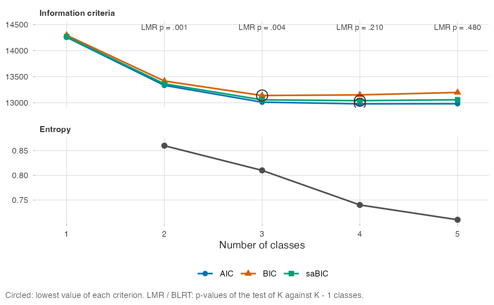
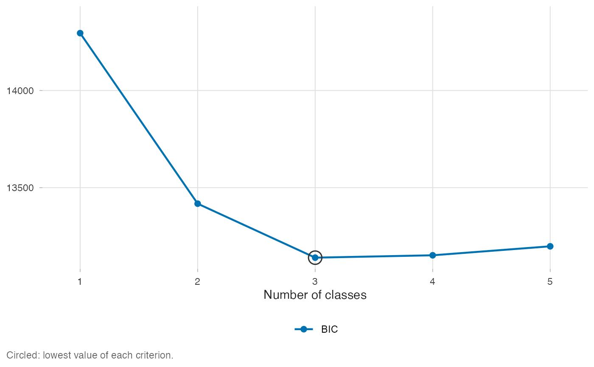
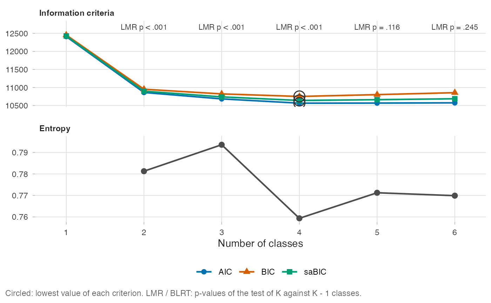
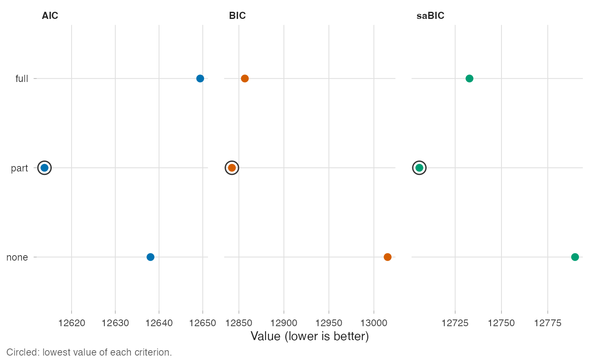

Plot fit indices for class enumeration or model comparison
lm_fitplot.Rdlm_fitplot() draws the information criteria of a set of models: against the
number of classes (an "elbow" plot, with entropy in a second panel and the LMR / BLRT
p-values printed above the points when supplied), or as a dot plot with one row per
model when the models do not differ in the number of classes (e.g. measurement
invariance models, or a compare_models() table). The lowest value of each criterion is
circled.
Usage
lm_fitplot(
x,
...,
criteria = c("aic", "bic", "sabic"),
entropy = TRUE,
lmr = NULL,
blrt = NULL,
labels = NULL,
by = c("auto", "K", "model")
)
# S3 method for class 'latentmix_comparison'
autoplot(object, ...)
# S3 method for class 'latentmix_compare'
autoplot(object, ...)
# S3 method for class 'latentmix_comparison'
plot(x, ...)Arguments
- x
Fitted models: a
lca()/lpa()/lta()/growth()model (further models in...), a list of models, a data frame of fit statistics with columnsK(ormodel) and the criteria (e.g.fittable()output), or acompare_models()table of three or more models.- ...
Further models (when
xis a model; named arguments label the models).- criteria
Information criteria to plot, among
"aic","bic","sabic"and"caic".- entropy
Add a panel with the entropy (class enumeration only).
- lmr, blrt
Optional LMR / BLRT results, as for
lm_table(): onelmr()/blrt()result, p-value orNULLper model (or a numeric vector of p-values).- labels
Optional model labels (one per model).
- by
"auto"(default): againstKif every model has a different number of classes, else by model;"K"or"model"force one form.- object
A
compare_models()result: a table of three or more models (a two-model comparison is a single test and is not plotted; uselm_fitplot(m0, m1)).
Examples
# fit statistics of five LCAs (as returned by fittable())
fs <- data.frame(K = 1:5, ll = c(-7120, -6650, -6480, -6455, -6447),
npar = c(8, 17, 26, 35, 44), n = 1000)
fs$aic <- -2 * fs$ll + 2 * fs$npar
fs$bic <- -2 * fs$ll + log(fs$n) * fs$npar
fs$sabic <- -2 * fs$ll + log((fs$n + 2) / 24) * fs$npar
fs$entropy <- c(NA, 0.86, 0.81, 0.74, 0.71)
lm_fitplot(fs, lmr = c(NA, 0.001, 0.004, 0.21, 0.48))

lm_fitplot(fs, criteria = "bic", entropy = FALSE)

data(aces)
# \donttest{
# class enumeration for the ACE items: BIC has its minimum at K = 4
fits <- lapply(1:6, function(k) lca(aces, starts_with("ace_"), K = k))
#> Starting Julia ...
lm_fitplot(fits, lmr = lapply(fits, function(m) if (m$info$fit$K > 1) lmr(m)))

# invariance across sex: full, partial and no invariance
full <- lca(aces, starts_with("ace_"), K = 4, group = female)
part <- lca(aces, starts_with("ace_"), K = 4, group = female, invariance = "ace_sex_abuse")
none <- lca(aces, starts_with("ace_"), K = 4, group = female, invariance = "none")
lm_fitplot(compare_models(full, part, none))

# }